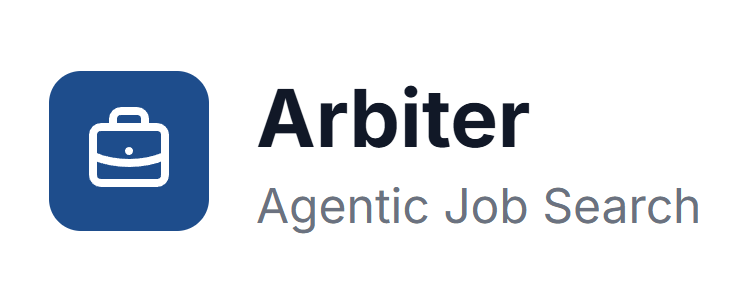

Selected work
Projects

Arbiter
ConvoRecs Internship
Redesigning an AI-powered job matching tool to feel clearer, more actionable, and easier to trust.
UX Design / Research InternView case study
THON
Family Portal
THON Technology
Turning an administrative family portal into a warmer, action-oriented dashboard for THON families.
UI/UX CoordinatorView case study
SupportMe
ReSENSE Lab · Penn State
A senior-centered support platform designed around fairness, dignity, and accessibility.
Lead UX ResearcherView case study